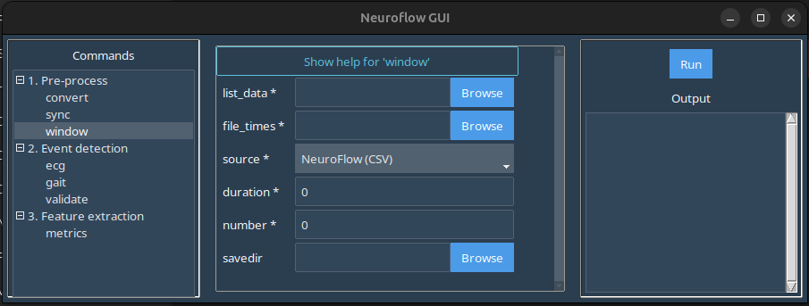

window
The window command allows you to split continuous data recordings into windows based on a reference time.
In the GUI, selecting the window command in the left-hand panel produces this screen:

Here:
-
list_data: Launches a file browser where you should select the file to be split.Important
In the case of modalities where there are multiple files per capture (e.g. Axivity files where there are multiple sensor files), select all the files that correspond to the data capture.
-
file_times: Launches a file browser where you should select the file containing reference timestamps. source: Select the source for the files selected inlist_data.- If the
convertcommand was used to produce a standardized .CSV then ensure NeuroFlow (CSV) is selected. - If splitting a longer, free-living recording directly from raw data, then select the corresponding source modality for the raw file(s).
- If the
duration: Set the duration for each window in seconds.number: Set the number of windows to extract pre/post the reference timestamp (e.g. 5 would mean 10 windows total: 5 pre and 5 post).savefile: Browse/enter the filepath for the split .CSV files. If left blank, the split .CSV files will be automatically named and placed in an events subfolder created in the same folder as the source files.
Example
Download the sample standardized Axivity and reference timestamp .CSV data here: data-window.zip
In the GUI window:
- Under
list_dataselect the extracted sub-01_ses-01_neuroflow-axivity.csv file. - Under
file_timesselect the extracted sub-01_ses-01_time.csv file. - Ensure *NeuroFlow (CSV) is selected in the
sourcedropdown. - Set a
durationof 10 seconds and set thenumberof windows as 3. - Set
savefileor leave blank for default export path. - Click
Runin the right-hand panel to produce the events subfolder with individual event .CSV files.